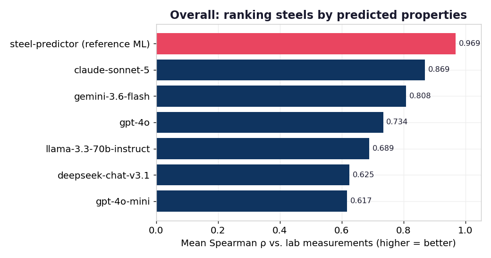
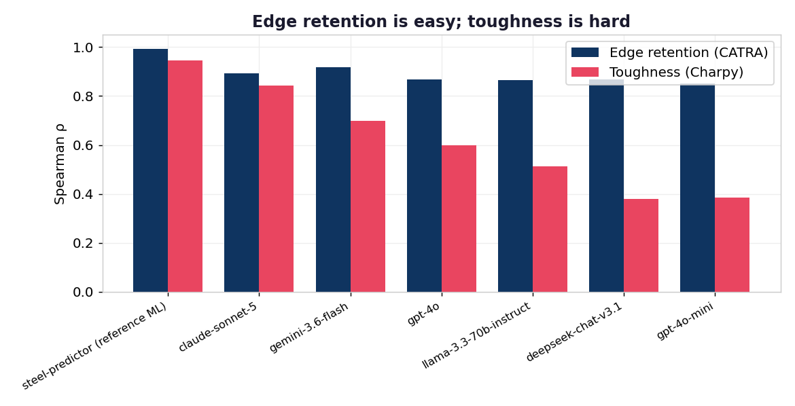
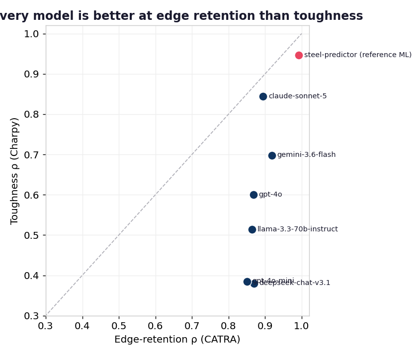
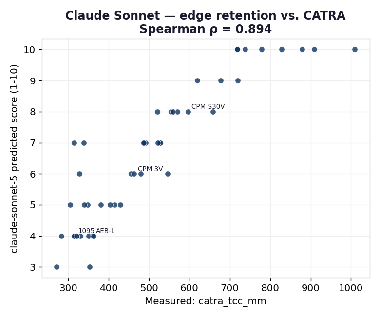
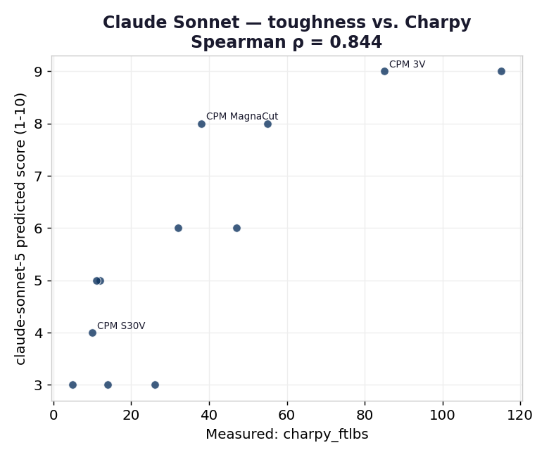

An open benchmark scoring large language models against real CATRA and Charpy laboratory measurements of knife-steel performance.
We give a model only a steel's chemistry
(e.g. C=1.9%, Cr=20%, V=4%, powder-metallurgy: yes) and ask it to
rate two properties on a 1–10 scale. We then score those ratings against
objective measurements — never subjective opinion:
Ground truth: CATRA standardized machine-cutting test (total card stock cut, mm). 48 steels.
Ground truth: Charpy impact energy (ft-lbs). 12 steels.
Scoring is scale-free (Spearman rank correlation + pairwise ranking accuracy), so a model is judged only on whether it orders steels correctly — the decision-relevant question — not on how it calibrates 1–10. Zero-shot, temperature 0, one sample per steel, identical prompt for every model.

| Model | Edge ρ | Tough ρ | Mean ρ |
|---|---|---|---|
| steel-predictor (reference ML) † | 0.992 | 0.946 | 0.969 |
| anthropic/claude-sonnet-5 | 0.894 | 0.844 | 0.869 |
| google/gemini-3.6-flash | 0.918 | 0.698 | 0.808 |
| openai/gpt-4o | 0.868 | 0.600 | 0.734 |
| meta-llama/llama-3.3-70b-instruct | 0.864 | 0.514 | 0.689 |
| deepseek/deepseek-chat-v3.1 | 0.869 | 0.380 | 0.625 |
| openai/gpt-4o-mini | 0.850 | 0.385 | 0.617 |

Wear resistance is close to a function of composition — it's dominated by hard carbide volume, which is set by carbide-forming elements (C, V, Cr, W, Mo). That relationship is legible and heavily documented, exactly what an LLM can internalize.
Toughness is a competition, not a sum. It depends on carbide size and distribution, powder-metallurgy processing, retained austenite, and the hardness the steel is run at — factors a bare composition string underdetermines. High carbon and vanadium raise wear resistance while lowering toughness, so naive "more alloy = better" reasoning breaks down.

On edge retention the field is bunched (ρ 0.85–0.92); even a small model orders
steels well. The separation appears on toughness, where
claude-sonnet-5 (0.844) and gemini-3.6-flash (0.698) pull
clear of gpt-4o-mini and deepseek-chat-v3.1 (both ≈0.38).
Toughness is the discriminating task.


For Claude Sonnet, predicted scores rise monotonically with the measured values on both properties. The toughness scatter also exposes the failure mode: several genuinely tough steels get compressed into low scores because the model hedges toward the middle when chemistry alone is ambiguous.
It does show modern LLMs carry a real, quantifiable amount of materials knowledge — enough to rank wear resistance about as well as a purpose-built model, from composition alone.
It doesn't show LLMs can replace a measured model or lab testing: toughness ordering is unreliable, magnitudes aren't calibrated, and none of this accounts for heat treatment or geometry. See the methodology for the full limitations.
git clone https://github.com/Steel-predictor-project/steel-llm-eval.git
cd steel-llm-eval
export OPENROUTER_API_KEY=... # one key → many providers
./run_benchmark.sh # run all models + rebuild the leaderboard
python harness/generate_charts.py # regenerate these figuresRaw per-steel model responses are committed under results/. Full method:
methodology · results & analysis.